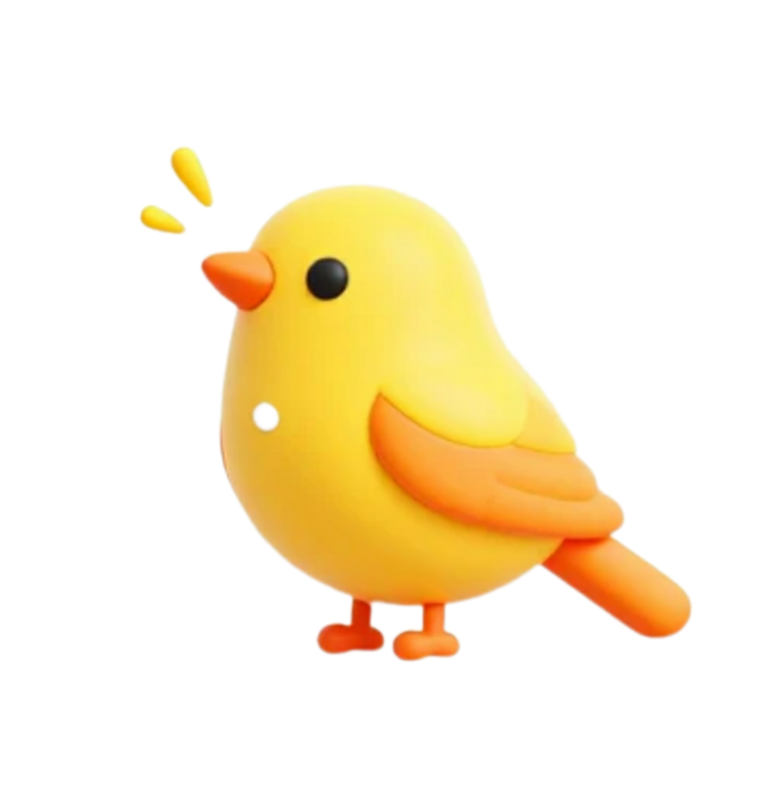

<!doctype html>
<html dir="rtl" lang="fa-IR">
		<head>

				<title>جوجه‌کشی</title>
				<link rel="icon" href="../../themes/default/images/logo.png.png" id="logo">
				<link rel="stylesheet" href="../../themes/default/css/bootstrap.rtl.min.css">
				<link rel="stylesheet" href="../../themes/default/css/bootstrap-icons.min.css">
				<link rel="stylesheet" href="../../themes/default/css/style.css">
				<script src="../../themes/default/js/popper.min.js"></script>
				<script src="../../themes/default/js/bootstrap.min.js"></script>
				<script src="../../themes/default/js/jquery.min.js"></script>
	           <script src="../../themes/default/js/script.js?v=1.0.0.1"></script>
			   <script src="../../themes/default/js/script.defer.js?v=1.0.0.1" defer></script>
				<meta name="viewport" content="width=device-width, initial-scale=1">
				<meta charset="utf-8">
				<meta http-equiv="expires" content="0">
				<meta name="resource-type" content="document">
				<meta name="distribution" content="global">
				<meta name="author" content="GHanarysara">
				<meta name="copyright" content="Copyright (c) by GHanarysara">
				<meta name="keywords" content="قناری‌سرا,جوجه‌کشی,تغدیه,قفس مناسب,نکات ضروری">
				<meta name="description" content="اطلاعات ویژه راجب قناری‌ها و زندگی آنها در نمایشگاه">
				<meta name="robots" content="INDEX,FOLLOW">
				<meta name="revisit-after" content="1 DAYS">
				<meta name="rating" content="general">
				<meta name="generator" content="GHanarysara">
				<title>جوجه کشی</title>
				<main class="mt-6">
					<header>
						
						</header>
						<aside>
				
							<nav class="navbar navbar-expand-lg bg-body-tertiary bg-dark border-bottom border-body fixed-top" data-bs-theme="dark">
								<div class="container-fluid">
								  <a class="navbar-brand" href="#">قناری‌سرا<i class="bi bi-feather"></i></a>
								  <button class="navbar-toggler" type="button" data-bs-toggle="collapse" data-bs-target="#navbarScroll" aria-controls="navbarScroll" aria-expanded="false" aria-label="Toggle navigation">
									<span class="navbar-toggler-icon"></span>
								  </button>
								  <div class="collapse navbar-collapse" id="navbarScroll">
									<ul class="navbar-nav me-auto my-2 my-lg-0 navbar-nav-scroll" style="--bs-scroll-height: 100px;">
									<li class="nav-item">
									<a class="nav-link" href="../../index.html"><i class="bi bi-house"></i></a>
									 </li>
									  <li class="nav-item">
										<a class="nav-link" href="../../about/index.html"><i class="bi bi-info-square"></i></a>
									  </li>
									  <li class="nav-item">
										<a class="nav-link" href="../../gallery/index.html"><i class="bi bi-image-alt"></i>  گالری عکس  </a>
									  </li>
									  <li class="nav-item">
										<a class="nav-link" href="../../multimedia/index.html"><i class="bi bi-cast"></i> چند رسانه‌ای </a>
									  </li>
									  <li class="nav-item dropdown">
										<a class="nav-link dropdown-toggle" href="../../articels/index.html" role="button" data-bs-toggle="dropdown" aria-expanded="false"><i class="bi bi-journal-text"></i>
										 مقالات و مکتوبات
										</a>
										<ul class="dropdown-menu">
										<li><a class="dropdown-item" href="../../articels/index.html">فهرست مقالات</a></li>
										<li><hr class="dropdown-divider"></li>
									 <li><a class="dropdown-item" href="../../articels/moghadameh/index.html">مقدمه&#10066;</a></li>
									 <li><a class="dropdown-item" href="../../articels/gh_taghzyeh/index.html">تغذیه&#9832;</a></li>
									 <li><a class="dropdown-item" href="../../articels/gh_jojekeshi/index.html">جوجه‌کشی&#9882;</a></li>
									 <li><a class="dropdown-item" href="../../articels/nokat_zarory/index.html">نکات ضروری&#10164;</a></li>
									 <li><a class="dropdown-item" href="../../articels/gh_frosh/index.html">فروش&#10004;</a></li>
									</ul>
									<li class="nav-item">
										<a class="nav-link" href="../../websites/index.html"><i class="bi bi-browser-edge"></i>  وبسایت‌های مرتبط  </a>
									  </li>
									</a>
									  <li class="nav-item">
										<a class="nav-link" href="../../sitemap/index.html"><i class="bi bi-globe-americas"></i>  نقشه سایت  </a>
									  </li>
									</a>
									  <li class="nav-item">
										<a class="nav-link" href="../../contact/index.html"><i class="bi bi-telephone"></i>  تماس با ما  </a>
									  </li>
									  <li class="nav-item">
										<a class="nav-link" href="../../tools/calculator/index.html">
										محاسبه‌گر</a>
									</li>
									<li class="nav-item">
										<a class="nav-link" href="../../tools/chance/index.html">
											گردونه‌ی شانس</a>
									</li>
									  <ul class="dropdown-menu">
										<li><a class="dropdown-item" href="../../signin/index.html"> ورود به سامانه </a></li>
										<li><hr class="dropdown-divider"></li>
										 <li><a class="dropdown-item" href="../../signup/index.html">عضویت در سایت</a></li>
										 <li><a class="dropdown-item" href="../../signin/index.html">ورود به سامانه</a></li>
									</ul>
								  </li>
							</ul>
								<form class="d-flex " role="search">
								<input class="form-control form-control-sm me-2" style="width: 70px" type="search" placeholder="جستوجو" aria-label="Search"/>
								<button class="btn btn-outline-success btn-sm" type="submit"><i class="bi bi-feather"></i><i class="bi bi-search"></i></button>
								  </form>
								  </div>
								</div>
							</nav>
						
								<!--منوی اصلی-->
								<button type="button" class="btn btn-dark offcanvas-sign w-100" data-bs-toggle="offcanvas"
								data-bs-target="#offcanvasNavbar" aria-controls="#offcanvasNavbar"><i class="bi bi-person-plus"></i>  ورود و ثبت نام  </button>
								<div class="offcanvas offcanvas-end" tabindex="-1" id="offcanvasNavbar"
								aria-labelledby="offcanvasNavbarlable" style="background-color: antiquewhite;">
								<div class="offcanvas-header">
								<h5 class="offcanvas-title" id="offcanvasNavbarlable">ورود به قناری‌سرا</h5>
								<button type="button" class="btn-close white" data-bs-dismiss="offcanvas" aria-label="Close"></button>
								</div>
								<div class="offcanvas-body">
								<ul class="navbar-nav justify-content-end flex-grow-1 pe-3">
								<li class="nav-item">
								<a class="nav-link active" aria-current="page" href="../../signup/index.html"><i class="bi bi-person-plus"></i>
									عضویت در سایت</a>
								</li>
								<li class="nav-item">
									<a class="nav-item">
										<a class="nav-link" href="../../signin/index.html" data-bs-toggle="modal" data-bs-target="#exampleModal">
										<i class="bi bi-box-arrow-in-left"></i>  ورود به سامانه  </a>
										</li>
									</li>
								</div>
							</div>
							<br><br>
								ساخت این نمایشگاه از سال 1396 تا کنون است
								<br>
								قناری‌های این نمایشگاه در ابتدا کوچک بود و سپس ارتقا یافت و به دو بخش که 
								یه بخش مختص به قناری‌ها و بخش دیگر را به طوطی‌هااختصاص دادند.
								بسیاری از علاقه‌مندان قناری‌ها را برای مسابقات،سرگرمی و... خریداری می‌کنند.
								 برای اطلاعات بیشتر  <a href="../../articels/index.html">در صفحه مقالات و کتوبات همراه ما باشید...</a>
							<br><br><br>
							<div class="accordion" id="accordionExample">
								<div class="accordion-item">
								  <h2 class="accordion-header">
									<button class="accordion-button" type="button" data-bs-toggle="collapse" data-bs-target="#collapseOne" aria-expanded="true" aria-controls="collapseOne">
									  پرفروش ترین قناری‌ها
									</button>
								  </h2>
								  <div id="collapseOne" class="accordion-collapse collapse show" data-bs-parent="#accordionExample">
									<div class="accordion-body">
									  نژاد رنگ زرد بسیار خاص و پرطرفدار است همچنین فروش زیادی دارد و از این نوع نژاد به عنوان حیوان خانگی بسیار مناسب است<div class=""></div>
									</div>
								  </div>
								</div>
								<div class="accordion-item">
								  <h2 class="accordion-header">
									<button class="accordion-button collapsed" type="button" data-bs-toggle="collapse" data-bs-target="#collapseTwo" aria-expanded="false" aria-controls="collapseTwo">
									  قناری‌های نارنجی
									</button>
								  </h2>
								  
								  <div id="collapseTwo" class="accordion-collapse collapse" data-bs-parent="#caption">
									<div class="accordion-body">
									 مناسب برای شرکت در مسابقات و البته بستگی به سبک زندگی آنها دارد
									 بسیار خاص و پرطرفدار است همچنین فروش زیادی دارد و از این نوع نژاد به عنوان حیوان خانگی بسیار مناسب است
									</div>
								  </div>
								</div>
								<div class="accordion-item">
								  <h2 class="accordion-header">
									<button class="accordion-button collapsed" type="button" data-bs-toggle="collapse" data-bs-target="#collapseThree" aria-expanded="false" aria-controls="collapseThree">
									  کرست قناری
									</button>
								  </h2>
								  <div id="collapseThree" class="accordion-collapse collapse" data-bs-parent="#accordionExample">
									<div class="accordion-body">		
							قناری‌هایی با نژادی خاص وجود دارند که اسم به آنها کرست می‌گویند که خیلی پرطرفدار هستند
							نژاد این رنگ بسیار خاص و پرطرفدار است همچنین فروش زیادی دارد و از این نوع نژاد به عنوان حیوان خانگی بسیار مناسب است
									</div>
								  </div>
								</div>
							</ul>
								  <!-- Modal -->
								  <div class="modal fade" id="exampleModal" tabindex="-1" aria-labelledby="signin" aria-hidden="true">
									<div class="modal-dialog">
									  <div class="modal-content">
										<div class="modal-header">
										  <h1 class="modal-title fs-5" id="signin">ورود به سامانه</h1>
										  <button type="button" class="btn-close" data-bs-dismiss="modal" aria-label="Close"></button>
										</div>
										<div class="modal-body">
											<div class="form-floating mb-3">
												<input type="email" class="form-control" id="Input" placeholder="نام کاربری">
												<label for="username" dir="ltr">نام کاربری</label>
											  </div>
											  </div>
											  <div class="form-floating mb-3">
												<input type="password" class="form-control" id="Password" placeholder="گذرواژه">
												<label for="password" dir="ltr">گذرواژه</label>
											  </div>
										<div class="modal-footer">
											<div class="form-check">
												<input class="form-check-input" type="checkbox" value="" id="check">
												<label class="form-check-lable" for="check">
													مرا به خاطر بسپار</label>
													</div>
													</div>
											<div class="modal-footer">
												<a href="../../signup/index.html"><small>گذرواژه‌تان را فراموش کرده‌اید؟</small></a>
										  <button type="button" class="btn btn-outline-dark">ورود به سامانه</button>
										  <button type="button" class="btn btn-outline-dark" data-bs-dismiss="modal">لغو</button>
										</div>
											</div>
												</div>
							</aside>
							<article>
					<!--جوجه‌کشی-->				
<h2 id="incubation">جوجه‌کشی و تکثیر قناری</h2>				
تکثیر و جوجه‌کشی قناری: 
1.فصل جفت گیری و آماده سازی پرندگان
2.انتخاب جفت مناسب
3.مراحل لانه سازی و تخم گذاری
4.مراقبت از تخم ها و جوجه‌ها
5.مشکلات رایج در تکثیر و راه حل ها.
برای جوجه کشی قناری ها سه روش وجود دارد:
1.جوجه کشی طبیعی: قناری ماده روی تخم ها می نشیند و آنها را گرم نگه میدارد،این روش بهترین روش است زیرا قناری مادر به طور غریزی می داند که چگونه از تخم ها مراقبت کند.(دوره جوجه کشی حدود 13 تا 14 روز است).
قناری ها معمولا در چه زمانی جوجه کشی میکنند؟ معمولا در فصل بهار و اوایل تابستان جوجه کشی میکنند،این دوره زمانی به دلیل افزایش طول روز و بهبود شرایط آب و هوایی،برای پرورش جوجه ها مناسب تر است.
جوجه کشی مصنوعی: از دستگاه جوجه کشی برای گرم نگه داشتن تخم ها استفاده میشود،این روش برای زمانی مناسب است که قناری ماده نمی تواند یا نمی خواهد روی تخم ها بنشیند،مهم است که دما و رطوبت دستگاه جوجه کشی را به دقت کنترل کنید،دما باید حدود 37.5 درجه سانتی گراد و رطوبت حدود 55 تا 60 درصد باشد.
جوجه کشی نیمه طبیعی:در این روش قناری ماده چند روز اول روی تخم ها می نشیند،سپس تخم ها به دستگاه جوجه کشی منتقل میشوند.
این روش برای زمانی مناسب است که قناری ماده در ابتدا تمایل به نشستن روی تخم ها دارد،اما بعد از چند روز خسته می شود و یا دیگر تمایلی به ادامه کار ندارد.
با این کار،قناری <u>مادر فرصت استراحت پیدا میکند و تخم ها نیز به طور مداوم گرم نگه داشته میشوند.</u>
جوجه‌کشی قناری یکی از پرطرفدارترین و سودآورترین فعالیت‌ها در بین علاقه‌مندان به پرندگان زینتی است. اینپرندگان زیبا با آواز دلنشین و رنگ‌های متنوع خود، نه تنها مونس علاقه‌مندان هستند، بلکه فرصتی عالی برای کسب درآمد نیز محسوب میشوند. در این مقاله جامع، تمام نکات کلیدی و کاربردی در مورد جوجه‌کشی قناری را به زبانی ساده و با رعایت اصول سئو پوشش میدهیم تا شما بتوانید با دانش کافی این مسیر را آغاز کنید.
کلیدواژه‌های مهم: جوجه‌کشی قناری، پرورش قناری، تکثیر قناری، دستگاه جوجه‌کشی قناری، تغذیه قناری، فصل جفتگیری قناری، نگهداری جوجه قناری.

<h4> انتخاب جفت مناسب و آماده سازی محیط:</h4>
<ul>
		<li>آواز قناری</li>
		<ol>
			<li> آمادگی برای جوجه کشی قناری در جای مناسب</li>
			<li>اهمیت جوجه‌کشی برای سلامت قناری</li>
			<li>در زمان مناسب</li>
			<li>در مکان مناسب</li>
		</ol>
<br><br><br><br>
موفقیت در جوجه کشی قناری، از انتخاب صحیح جفت آغاز میشود. قناری‌های نر و ماده باید از سلامت کامل، سن مناسب و سازگاری خوبی برخوردار باشند.
انتخاب جفت: به دنبال قناریهایی باشید که از نظر ظاهری سالم، فعال و بدون علائم بیماری باشند. تغذیه مناسب و داشتن سابقه خوب در جفتگیری و تخم‌گذاری (در صورت امکان) از فاکتورهای مهم است.
فصل جفتگیری: بهترین زمان برای جفتگیری و جوجه‌کشی قناری، فصل بهار و پاییز است. در این فصول، طول روز بیشتر بوده و شرایط آب و هوایی نیز مساعدتر است. از جفتگیری در فصول گرم تابستان یا سرد زمستان خودداریکنید، زیرا ممکن است باعث استرس و درگیری بین پرندگان شود.
<p>راهنمای جامع جوجه کشی قناری
جوجه‌کشی قناری، فعالیتی لذت‌بخش و در عین حال نیازمند دقت و دانش است. قناری ها پرندگانی زیبا با آواز دلنشین هستند و پرورش آنها میتواند تجربه‌های ارزشمند باشد. در این راهنما، به اصول کلیدی جوجه‌کشی قناری از مراح لاولیه تا بزرگ شدن جوجه‌ها میپردازیم.
۱. آماده‌سازی قبل از جفتگیری
انتخاب جفت مناسب: مهمترین قدم، انتخاب قناری‌های سالم، شاداب و بدون نقص ظاهری است. قناری نر باید پرانرژی و خوش صدا باشد و قناری ماده نیز باید سرحال و آماده جفتگیری باشد. سن مناسب برای جفتگیری قناری‌ها معمولاً از یک سالگی به بعد است. از جفت کردن قناری‌های خویشاوند (مانند پدر و دختر یا مادر و پسر) خودداری کنید، زیرا اینکار میتواند منجر به ضعف نسل و مشکلات سلامتی در جوجه‌ها شود.
<p>تغذیه مناسب: تغذیه نقش حیاتی در موفقیت جوجه‌کشی دارد. قبل از فصل جفتگیری، رژیم غذایی قناری‌ها را بااضافه کردن تخم مرغ پخته (له شده)، سبزیجاتی مانند کاهو، اسفناج و گشنیز (به صورت تازه و به مقدار کم) و
میوه‌هایی مانند سیب و گلابی غنی کنید. همچنین استفاده از مکمل‌های ویتامینی و معدنی مخصوص پرندگان زینتی توصیه میشود.
فراهم کردن شرایط محیطی: قفس مناسب، تمیز و عاری از هرگونه آلودگی، نور کافی (اما نه مستقیم آفتاب) و دمایمتعادل (حدود ۱۸ تا ۲۴ درجه سانتیگراد) از ملزومات است. قفس باید در محلی آرام و دور از رفت و آمد زیاد وصداهای بلند قرار گیرد.
۲. فرایند جفتگیری و تخم‌گذاری
معرفی قناری‌ها: پس از آماده سازی، قناری نر و ماده را در قفس جفتگیری قرار دهید. معمولاً قناری نر زودتر شروعبه آواز خواندن و نمایش رفتارهای جفتگیری میکند. زمانی که نر به طور مداوم به ماده توجه نشان داد و ماده نیز رفتارهای پذیرش (مانند تکان دادن دم یا خم شدن) را از خود نشان داد، فرایند جفتگیری آغاز شده است.
ساخت لانه: حدود ۱۰ تا ۱۴ روز پس از جفتگیری موفق، ماده شروع به ساخت لانه میکند. فراهم کردن مواد لانه‌سازی مناسب مانند پنبه، الیاف طبیعی، کنف یا سبزه خشک شده در اختیار پرنده، به او در ساختن یک لانه محکم وراحت کمک میکند.
تخم‌گذاری: قناری ماده معمولاً ۳ تا ۵ تخم میگذارد. فاصله زمانی بین گذاشتن هر تخم حدود ۲۴ ساعت است.
تخم‌گذاری معمولاً صبح زود انجام میشود. لازم است در این دوره، به تغذیه ماده توجه ویژهای شود.<p>
۳. دوره جوجه‌کشی (هچ شدن)
حضانت تخم‌ها: ماده قناری از روز دوم یا سوم پس از گذاشتن اولین تخم، شروع به خوابیدن روی تخم‌ها (حضانت)میکند. این دوره حدود ۱۳ تا ۱۶ روز طول میکشد. در این مدت، نر نیز به تغذیه ماده کمک میکند.
بررسی تخم‌ها: برای اطمینان از بارور بودن تخم‌ها، میتوانید پس از حدود ۷ روز، تخمها را در برابر نور (با استفاده ازچراغ قوه یا دستگاه نطفه سنج) بررسی کنید. تخم‌های بارور دارای یک شبکه رگهای خونی ظریف در داخل خود هستند،در حالی که تخمهای خالی شفاف به نظر میرسند. تخمهای خالی را از لانه خارج کنید.
شرایط محیطی در دوره حضانت: دما و رطوبت مناسب در این دوره بسیار حیاتی است. دمای ایدهآل حدود ۲۰ تا ۲۲درجه سانتیگراد و رطوبت بین ۵۰ تا ۶۰ درصد است. از ایجاد استرس و بر هم زدن آرامش پرندگان خودداری کنید.
۴. مراقبت از جوجه‌ها
تولد جوجه‌ها: جوجه‌ها معمولاً به ترتیب زمان تخمگذاری از تخم خارج میشوند. در بدو تولد، جوجه‌ها کور، لخت و کاملاً وابسته به والدین هستند.
تغذیه جوجه‌ها: والدین وظیفه تغذیه جوجه‌ها را بر عهده دارند. آنها با غذای نرم و مقوی (مانند تخم مرغ نرم شده ومواد مقوی دیگر) جوجه‌ها را تغذیه میکنند. در صورت مشاهده عدم توانایی والدین در تغذیه جوجه‌ها، میتوان ازروشهای دستیابی به تغذیه استفاده کرد، اما این کار نیازمند مهارت و دقت بالایی است.
مراقبت‌های بهداشتی: تمیز نگه داشتن قفس و لانه، تعویض مرتب آب و غذای تازه، و بررسی روزانه وضعیت جوجه‌ها و والدین از اهمیت بالایی برخوردار است.
استقلال جوجه‌ها: حدود ۲۰ تا ۲۵ روز پس از تولد، جوجه‌ها آماده مستقل شدن از والدین خود هستند. در این زمان، آنها توانایی خوردن غذا و نوشیدن آب به تنهایی را دارند. میتوانید جوجه‌ها را از والدین جدا کرده و در قفس جداگانه قراردهید.</p>
<h3 id="additional_notes">نکات تکمیلی</h3>
</p>
پرهیز از استرس: استرس یکی از دلایل اصلی عدم موفقیت در جوجه‌کشی است. محیطی آرام و بدون تغییرات ناگهانی‌ برای پرندگان فراهم کنید.
نظافت مداوم: رعایت بهداشت در تمام مراحل، از تمیز کردن قفس‌ها تا ظروف آب و غذا، کلید جلوگیری از بیماری‌ها است.
</p>
صبور باشید: جوجه‌کشی نیازمند صبر و حوصله است. ممکن است در دوره‌های اول با چالش‌هایی روبرو شوید، اما باکسب تجربه، موفقیت شما بیشتر خواهد شد.
با رعایت این نکات، میتوانید شانس موفقیت خود را در جوجه‌کشی قناری‌ها به میزان قابل توجهی افزایش دهید و ازتماشای رشد و نمو این پرندگان زیبا لذت ببرید.
</article>
<footer>
	<button onclick="scrollToTop()" id="upBtn" class="btn btn-warning" style="position: fixed;bottom:20px;right: 20px;display: none;">
		<i class="bi bi-chevron-double-up"></i>
		</button>
		<script>
			window.onscroll=function(){
				document.getElementById("upBtn").style.display=(document.documentElement.scrollTop>100)? "block":"none";
			};
			function scrollToTop(){
				window.scrollTo({top:0,behavior:'smooth'});
			}
			</script>
	<br clear="both">
		<div class="footer">
			<a href="../../index.html">Home</a>
			<i class="bi bi-dot"></i>
			<a href="../../about/index.html" class="websites">About</a>
			<i class="bi bi-dot"></i>
			<a href="../../gallery/index.html" class="websites">Gallery</a>
			<i class="bi bi-dot"></i>
			<a href="../../multimedia/index.html" class="websites">Media</a>
			<i class="bi bi-dot"></i>
			<a href="../../articels/index.html" class="websites">Articles</a>
			<i class="bi bi-dot"></i>
			<a href="../../signin/index.html" class="websites">Sign in</a>
			<i class="bi bi-dot"></i>
			<a href="../../signup/index.html" class="websites">Sign up</a>
			<i class="bi bi-dot"></i>
			<a href="../../sitemap/index.html" class="websites">Site map</a>
			<i class="bi bi-dot"></i>
			<a href="../../websites/index.html" class="websites">Websites</a>
			<i class="bi bi-dot"></i>
			<a href="../../contact/index.html" class="websites">Contact us</a>
			<a href="#top"><div id="up"></div></a><br>
			Designed by<abbr title="Fateme Golshan"> GHS </abbr>&trade;<br>
			All rights reserved<br>
			&copy; 2024-2025
		</div>
	</footer>
</main>
</body>
</html>
<!--Designed by MT-->	